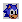

Sonic the Hedgehog Guide
*Master System/Game Gear*

Game Info | Music | Cheats and Tips | Boxes
You are listening to: Bridge Zone (Mix 2) - John Weeks
Contents
*Introduction*
*In Depth Walkthrough*
Special Stage
Green Hill Zone | Bridge Zone | Jungle Zone
Labyrinth Zone | Scrap Brain Zone | Sky Base Zone
 |
This guide will be going into each level and giving you the lowdown on what dangers there are and what to avoid. Since that Sonic 1 came out for the Master System AND Game Gear, there are going to be certain differences between the two versions. Do not worry - this guide will cater for both versions, and you may also find some symbols during the guide, here's what they'll cover:
|  | This is the life icon. You'll find one of these in each level. When you see this symbol next to some text this means that the guide will tell you where and how to get the life in that level.|
 | This is a Chaos Emerald. One can be found in each Zone, and when you see the Chaos Emerald symbol, the guide will alert you on where the Emerald is, should it be on the level you are looking through. | |
This guide will mainly be focusing on the Master System version. Although, many people own the Game Gear version and there are many differences between the two versions. Therefore, at points there will be marks where you will see :GG: appear next to text. This will tell you a significant difference in the Game Gear version that does not appear in the MS version, that you will need to know to survive. Some are good, some are bad differences. Now that I've pointed out the not-so-complicated symbols and crap, here's the complete guide! |
*In Depth Walkthrough*
Special Stage

First of all, the lowdown on the Special Stages. These Zones are your perfect opportunity to grab an extra continue, should the worst happen to you in the game. These stages will come in the form of a sort of pinball theme, with bumpers and springs everywhere. Your job is to look for the 'Cont' item box, destroy it, and reach the end in time. Don't worry, it's not as hard as it sounds at all. All you need to do is concentrate, you don't want to be bouncing all over the place at breakneck speeds, you'll never get anywhere. Time your bounces, some springs may get you up higher than others, and for a big bonus at the end, collect as many rings as you can along the way. You don't get a Time Bonus at the end of the round, so this gives you plenty of time should you be going for a high score...
Green Hill Zone
Act 1 | Act 2 | Act 3

Act 1
This is a nice easy stage, not too dangerous, but you're still open to traps if you're not careful. To gain mass speed at the start, grab the Invincibility and spin attack down the slope. Watch out for some fairly obvious spike pits.
|
| After the first spike pit, keep going right until you see a tree with two rows of rings to the right of it. The life is in the tree. |
Act 2
Be careful, there are many traps in the Underground Cavern. Don't jump once you are in the water or else you lose rings from the spikes on the ceiling. Once outside the cavern wait for the moving platform rather than just jump - you'll never make it.
|
| As soon as you fall into the water, jump into the left wall.
|
| Once you are out of the water at the beginning, you will see a spring to get you out of the cavern, near a restart box. Once out of the cavern, jump on the next platform, but don't go on the spring. Instead, carry on into the opening next to it. This will lead to more water, and a crabmeat. Fall down the waterfall at the end of the room and retrieve the Emerald.
|
:GG: | In the Game Gear version, you don't need to worry about jumping in the water, you won't touch the spikes. Also, on the last slope, make sure you spin attack down it because unlike the MS version, there's spikes if you don't make it.
| | |
Act 3
Robotnik's first encounter is a cinch. Just wait until he lowers to run you over and hit him. Easy huh?
|
| After the first spike pit, keep going right until you see a tree with two rows of rings to the right of it. The life is in the tree.
|
:GG: | This is much easier if you're playing on your Game Gear as you can hit Robotnik while he's flying over your head. | |
| |
Bridge Zone
Act 1 | Act 2 | Act 3

Act 1
This is the first level in which bottomless pits are beginning to be used. Take your time on the seesaws, don't bother trying to get to the platform if you don't think you are going high enough. Careful of falling bridges and spiky enemies.
|
| At the second seesaw near the the end of the level, instead of just bouncing once, bounce about two or three times and head right once airbourne. You'll land on a high platform with the life on it.
|
| Near the end of the level there is a spring, and you'll be able to see the Chaos Emerald under it on a lower platform. Stand on the first step on the falling bridge to the right of the spring, and jump onto the lower platform as you are falling.
| |
Act 2
Timing is the key here, as the screen scrolls automatically in a horizontal direction, so you won't have much time to go sight seeing. Just time everything right, but try not to be tempted to go to the far right of the screen all the time, as there are some creepy traps lying ahead of you in this level.
|
| Between halfway and near the end of the level, you'll find it floating in the river. Jump on it, but make sure you land on solid ground. Master System owners may need to duck and move the screen down to clearly see the 1-Up, GG owners have no problem - the life appears at the bottom of the screen.
|
:GG: | There are several differences in this level on the Game Gear. One significant difference is that unless you have time to get the restart box, located on a high platform via the seesaw, you'll begin at the start of the level if you happen to die.
| |
Act 3
Robotnik is slightly more difficult this time. He will appear in two places, inbetween a small platform. The trick is to hit Robotnik as he is rising, land on the centre platform and duck to dodge his bullets when he shoots at you. Repeat this until he buggers off.
|
| Behind you at the start of the level.
|
:GG: | Again, easier if you are playing on the Game Gear, you appear on two dipping bridges, and Robotnik will emerge from the middle of one of those bridges. Use the same tactic as the Master System version, although it's best to duck at the bottom of the dip on the opposite bridge. | |
| |
Jungle Zone
Act 1 | Act 2 | Act 3

Act 1
Pretty long stage this, you'll need to use logs to get across oceans and rivers, and swinging logs to safely pass chasms. Beware of the spiky wodden log floor, and it's always best to have a sheild handy.
|
| At the start, travel along the top route, along the vines. When you see the first waterfall, jump across the platforms to grab the life.
|
| When you run across the spiky logs, you'll notice the Emerald sitting on a platform below you. Keep going ahead to the waterfall and jump on the log. Wait for the log to descend and jump across to the platform to the left. You'll see a log floating on the river. Land on that and keep going left until you reach the gem.
| |
Act 2
A vertical level here, don't do anything rash on this level, as the screen follows you, and if you hit the bottom of the screen wherever you are, you automatically die. On the same note, careful of clever traps set to bring you down. Take time on the log jumps at the end.
|
| Throughout the level, try to keep yourself on the far left of the level and keep your eyes open for the life.
|
:GG: | Game Gear owners need not worry. You don't die if you hit the bottom of the screen, neither do you have to contend with the log business at the end. Lucky you eh?
| |
Act 3
You'll be on a curved platform when you face Robotnik. He'll casually drop rolling bombs - nice bloke. Dodge the bombs and hit Robotnik when he's about to drop another bomb.
|
| At the start, go into the river and the life is on the second platform below you.
|
:GG: | As in Green Hills, you can hit Robotnik while he's flying about, unlike the Master System version. | |
| |
Labyrinth Zone
Act 1 | Act 2 | Act 3

Act 1
This is the first water level, so be cautious of plenty of underwater traps such as spears and swinging maces. Be wary of oxygen time running out, make sure you're somewhere near a batch of air bubbles when the air timer starts ticking down.
|
| At the end of the level you'll see a 10 Ring item box on its own out of the water, on a single platform. Don't open it! Hit the switch on its left and turn back to get it. The 10 Ring box has changed to a 1-Up box.
|
Act 2
This act has a lot more traps, so be careful. Act fast as there are now longer gaps between air bubbles. One of the more challenging levels in this game.
|
| Master System
When you get in the water, follow the underpassage right, destroying the droid on the way, until you get to a fork. One way is the direction you came from, one going forward and another taking you to a corridor below you and back left. Take the bottom route. Collect the air and fall down the drop. Avoid the spikes on the ceiling and get the life at the end of the room. Hit the spring to get back quicker to conserve air.
Game Gear
Follow the route underwater, destroying the droid along the way. Get past the swinging maces and you'll see air bubbles, and a drop with rings to your left. Get the air and fall down the drop. Follow the passage left until you find the life.
|
| You'll notice an Invincibility item box near the end of the level, out of the water on a long platform. Collect it, and run as fast as you can, back into the water, and continue the level, don't stop for anything. The Chaos Emerald is in the spikes, so grab it before your invincibility runs out.
|
:GG: | Not as many spikes as in the Master System version, which can only be a good thing. Also, the Chaos Emerald WON'T be found in spikes like the MS counterpart, just collect it in a small opening at the end of the level.
| | |
Act 3
Robotnik will appear in the centre of the screen. Don't do anything yet, its too risky; duck the bullets he fires instead. When he appears above you in the top left passage, hit him, and then jump to the other side and avoid his rocket. Robotnik will appear in the top right hand passage, again above your head. hit him, jump to the other side and dodge the rocket. Repeat this till he gives it up.
|
| Hit the spring at the start and go left as you go up. Navigate past the spikes and the life is at the end of the corridor.
|
| |
Scrap Brain Zone
Act 1 | Act 2 | Act 3

Act 1
A quick level, but not without its fair share of tricky traps. Obstacles include electric posts and flamethrowers in the ceiling.
|
| When you go outside, it's rolling off on the second travelator. Be quick to grab it.
|
Act 2
More of a challenge, more travelators and traps. To overcome the open doors near the end, when you get to the fork earlier in the level, take the top route, hit the switch ONCE, then take the bottom route.
|
| Go down the bottom route at the fork, then jump down the drop to the far right. When you land there will be two doors. The one on the right holds a warp machine that takes you to the top of the room again. The one on the left takes you to the 1-Up, which can be found in the room with the fork.
|
| When taking the top route at the fork, fall down the third drop you see. It's not death like the other two trust me... (hee hee... ^_^). Go in the warp machine, and the emerald is there!
| |
Act 3
You don't have to battle Robotnik, but you have to get past the little door/spring ensemble set for you. Remember doors with lights on a certain side, only open when you confront it from that particular side etc. Here is a step by step guide to the end:
From when you meet the first spring;
- Ignore the spring, carry on ahead.
- Fall down the first drop ahead of you.
- Carry on right past the de-activated electric post.
- Jump on the spring and carry on left.
- Jump on the first spring you see ahead, and go LEFT.
- Go through the first door ahead ONLY. Hit the spring and go right past the travelator.
- Again, go through the first door ONLY. Hit the spring and go right.
- Go through the door, go on the spring and go LEFT again, past the long travelator.
- Pass the door, jump over the drop, avoid the button, and carry on left. If you hit the button, just press it again and continue left.
- Hit the spring and go right. Chase Eggman to the end of the level.
|
| The SECOND time you get the chance to go in either direction, go right and fall down the drop. The life is near the exit door.
|
| |
Sky Base Zone
Act 1 | Act 2 | Act 3

Act 1
A paticularly difficult level, be vey careful of lightning, you can tell chains by diamonds in the air. Guns, Orbinauts and bottomless pits make a nasty combination, beware. The end consists of flying platforms, remember that when you jump in the air, the platform stps moving. You'll need that tip. Hey, don't mention it. :)
| |
Act 2
The MOST lethal level in the game!!! Tons of traps, and no rings! The most life-saving tip I can offer you on this game is this: As soon as you start the level, walk off the platform the the left. Instead of dying in a bottomless pit, you'll land on a flying platform. Jump from platform to platform after that and when you see the other side of the ship (with the chain going diagonally up) jump back onto the blimp and carry on left, dodging the massive bullets firing at you.
|
| After you entrust your life with the flying platform, you'll notice a ladder, and a hovering platform going up and down just below it. If you really want the life, jump onto the platform and up the ladder to get the life. In this evil level though, it's really not worth it.
|
| As you see the other side of the blimp (with the chain), stay on the flying platform until you are hovering above the piece of platform behind the chain. Jump onto the platform behind the chain, and the final Chaos Emerald is right at the end, on your right.
| |

Act 3
Master System
There is a lightning bar that switches on and off that moves between Robonik's booth and the near left side of the screen. There is also a plunger that powers up and shoots a bolt of electricity when Robotnik presses it. Initially the lightning bar will move towards you with lightning and back to Robotnik with no lightning. It is when the bar moves back when you can hit Robotnik and run back to the left side of the screen, which is the safest place to be. At times the plunger will be pressed and a bolt of electricity will home in towards you. The best thing to do is to keepo running to the left of the screen, even if you are already as far left as you can be, and avoid the bolt of electricity as it comes for you. The bolt will disappear out of the screen and won't bother you until Robotnik presses the plunger again. After you have hit Robotnik a sufficient amount of times the lightning bar will move and stop with no lightning. Run and hit Robotnik, but don't run back until the lightning has been switched off as the bar is moving back towards Robotnik. Repeat this until you have to chase Robotnik out of the game.
Game Gear
There are three flamethrowers on the floor, Robotnik is safely in a booth, and the bolt of electricity with the plunger is still present from the Master System version. The left flamethower will start first, so you can avoid it and hit Robotnik close up. hen the fire dies, get away as the flamethrower next to Robotnik will start. Remember to avoid the bolts of electricity, using the trick explained in the Master System guide to this boss above. Back to the flamethrowers, while the one next to Robotnik is going, you can still hit him by jumping over the fire. When the the flamethrower dies down, stay on the left side as the centre flamethrower will start. I would not advise hitting Robotnik at this point; its too risky. Once the middle flamethrower stops, the pattern will repeat, so follow the pattern again until Robotnik's booth is destroyed.
| |
|
| |